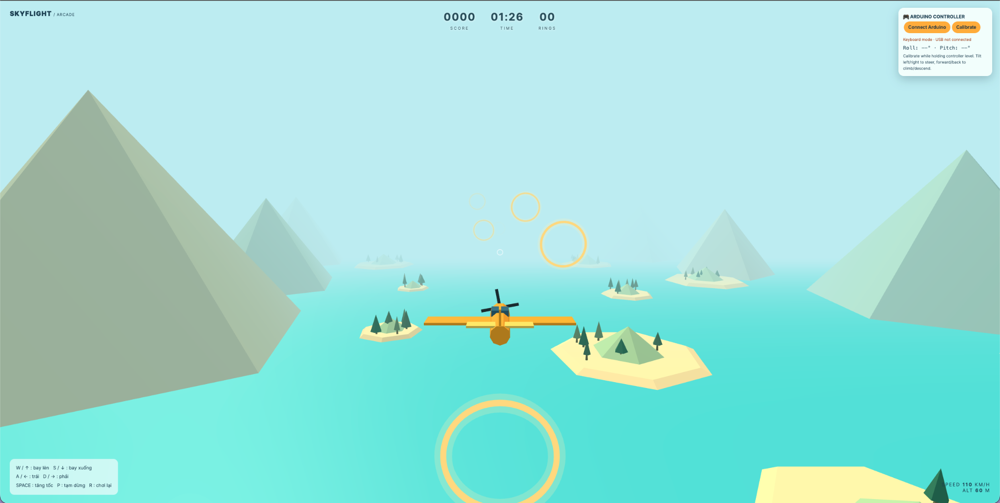
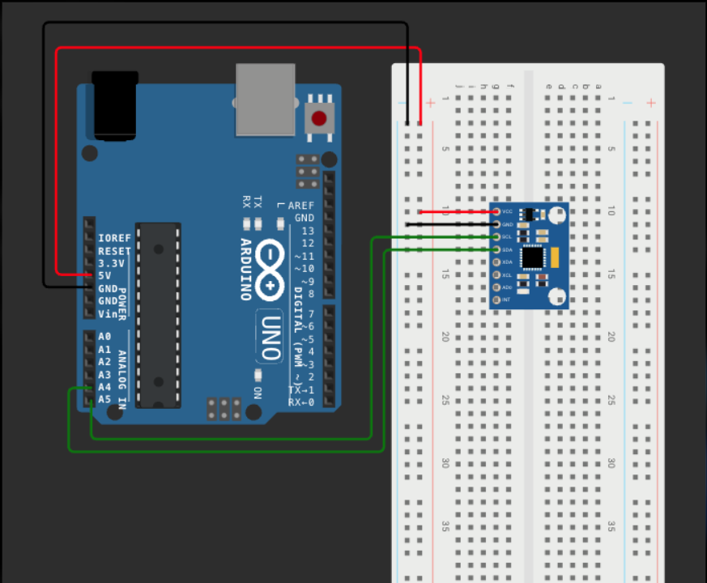

SkyFlight
Fly through glowing rings with your keyboard or an Arduino motion controller.
Gameplay demo · 35 seconds
Gameplay screenshot

Arduino controller wiring

Fly through glowing rings with your keyboard or an Arduino motion controller.

